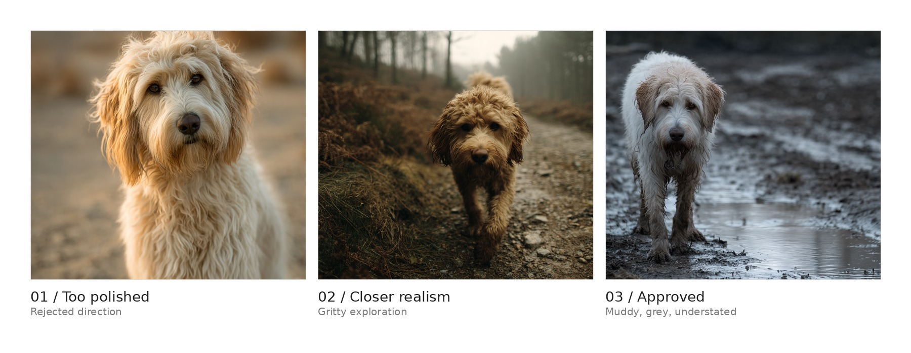

Challenge
Could a secondary background element be created without increasing production logistics?
Could a secondary background element be created without increasing production logistics?
The AI element is kept distant, soft and secondary, integrated through long-lens focus hierarchy.
Reduced logistics. Preserved realism. No distraction from the actor or scene.
Dirty, exhausted and non-stylized, designed to stay inside the scene.

The animal remains a soft-focus production element, not a visual demonstration.
The intervention protects the shot's intention while reducing the need for additional animal logistics.